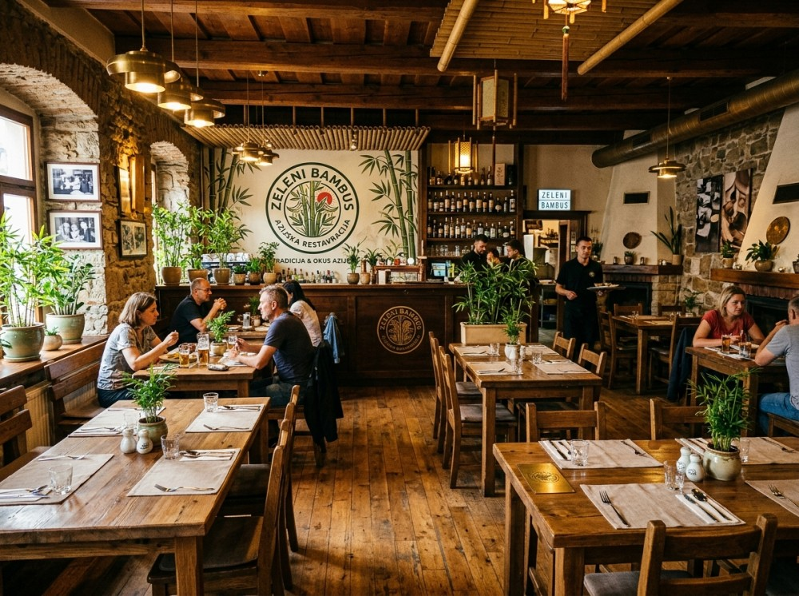

O nas
Naša zgodba
Gostilna Zeleni Bambus je nastala iz ljubezni do potovanj in dobre hrane. Družina Novak se je po več letih potovanj po Japonski, Vietnamu in Tajski odločila, da okuse, ki so jih najbolj navdušili, prinese domov v Žibernik pri Rogaški Slatini.
Staro družinsko hišo so preuredili v toplo gostilno z lesenimi mizami, bambusovimi detajli in teraso z razgledom na zelene griče. Prostor je zasnovan tako, da se v njem počutite kot doma, le da malce bližje Aziji.
V kuhinji združujemo azijske recepte s sestavinami slovenskih kmetov: zelenjavo, jajca, meso in sadje kupujemo pri pridelovalcih iz okolice, rezance, omake in začimbe pa pripravljamo sami ali jih skrbno izbiramo pri preverjenih dobaviteljih.
Naš cilj je preprost: da vsak gost odide sit, zadovoljen in z željo, da se kmalu vrne. Dobrodošli pri nas!

Delovni čas
| Dan | Odprto |
|---|---|
| Ponedeljek | 11:00-21:00 |
| Torek | 11:00-21:00 |
| Sreda | 11:00-21:00 |
| Četrtek | 11:00-21:00 |
| Petek | 11:00-21:00 |
| Sobota | 11:00-21:00 |
| Nedelja | Zaprto |
Lokacija
Gostilna Zeleni BambusŽibernik 19
3250 Rogaška Slatina
Slovenija
Prikaži večji zemljevid v drugem zavihku